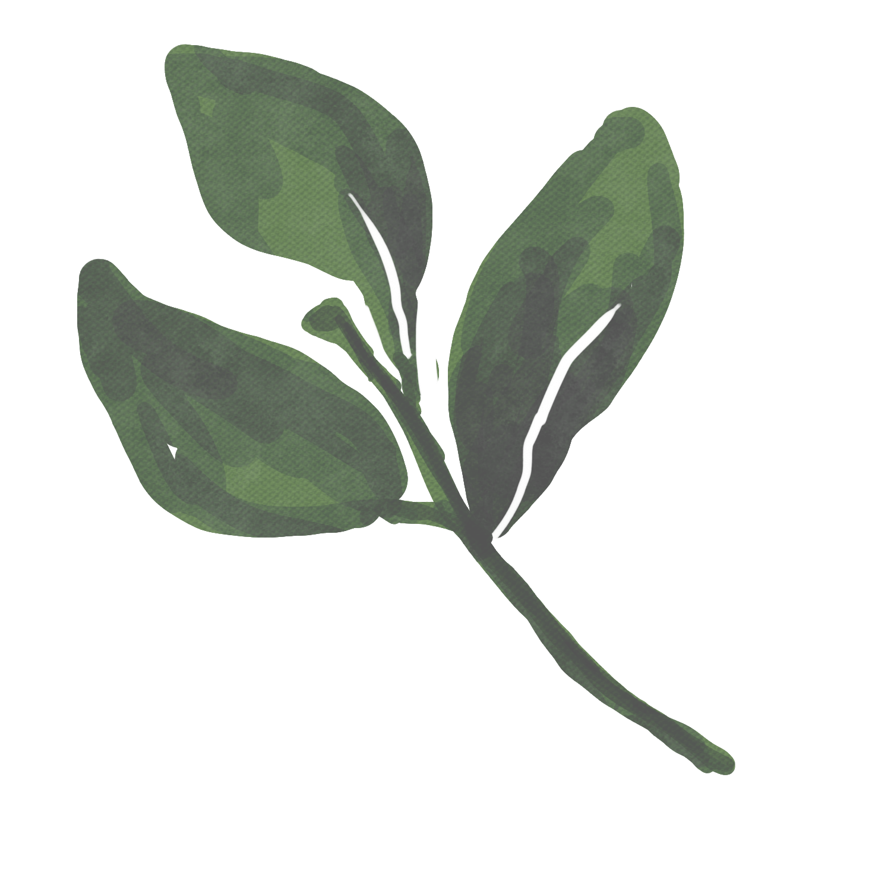

We are the Flowery and we have proudly owned and operated Flowery Jakarta Studio since 1987. From the day the seed hits the earth to the moment you receive your design, know that your flowers have been in the hands of artisans.

Asha Ashley
A creative through and through, I live for creating beauty — in every aspect of my life, from my home, to other’s homes & events.
Be it brightening someones day with a delivery of fresh, unique flowers, or transforming the most important day of a couple’s lives into a polished, living space of art — no matter how small or grand the gesture, I take flower orders on with utmost care, attention to detail and a refined eye to create something heart-stirringly beautiful.
My credentials are in art & design, with a background in graphic design. A Cal Poly grad, and since 2003 I have practiced and enjoyed many aspects of design including illustration, calligraphy, photography and styling, among others. Collecting the skills from each has contributed to building my own brand to serve clients and customers with top notch floral designs.